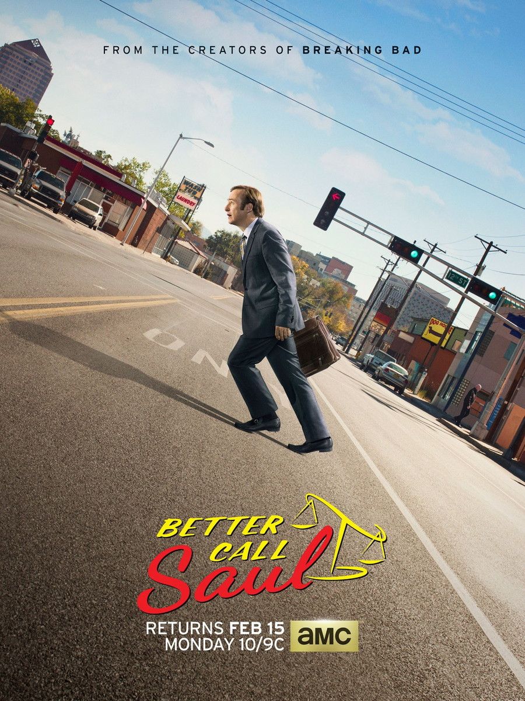
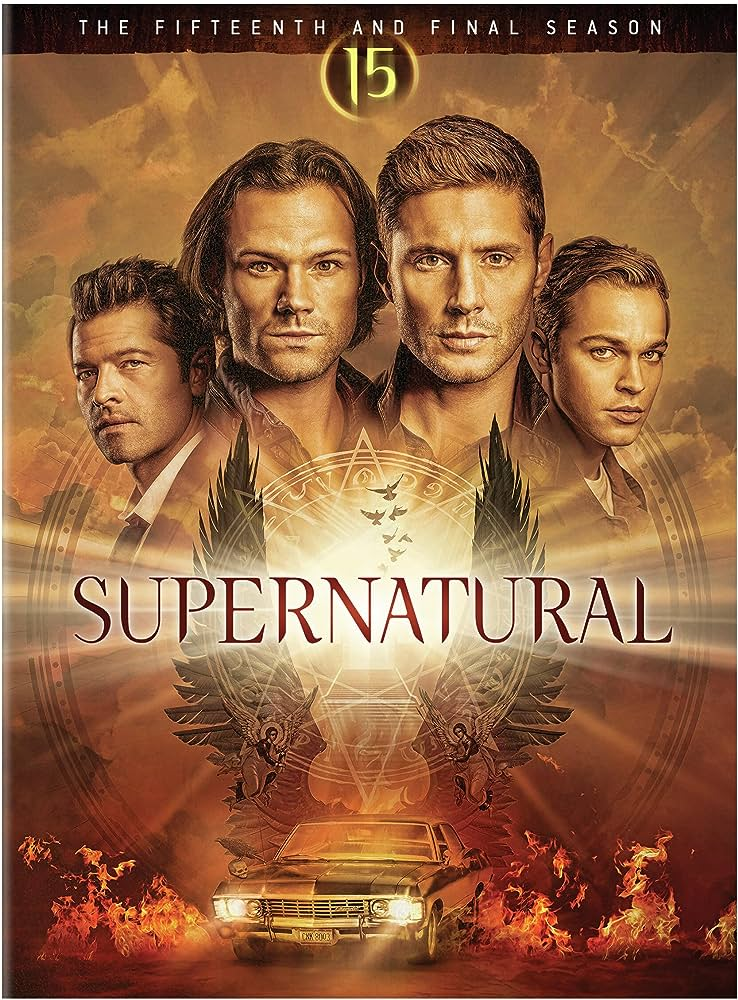
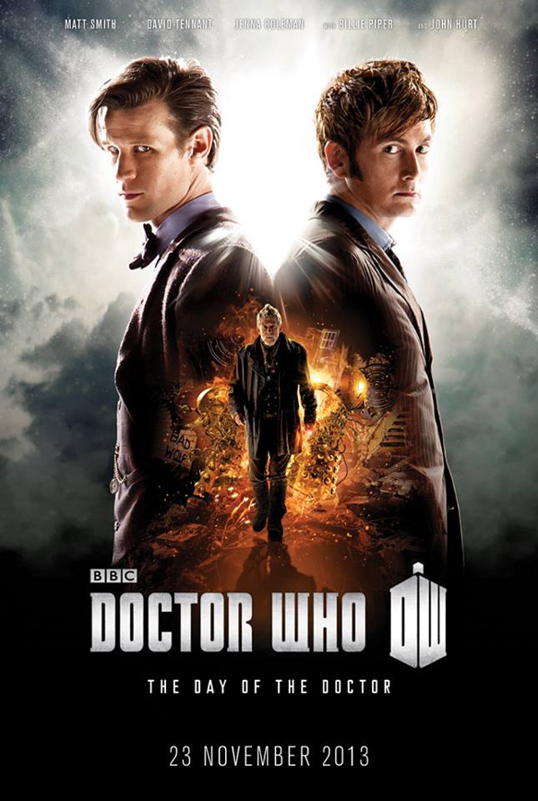
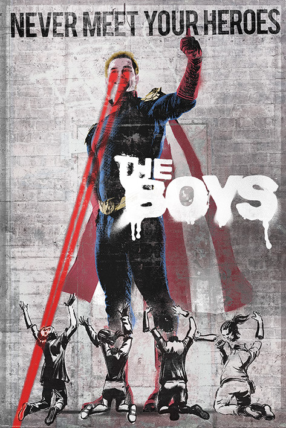

📅14 de Outubro de 2023
The Witcher (2019) Entre Espadas e Feitiços: Uma Série que Desafia as
Trevas e os Destinos
Explorando os Conflitos Épicos e as Reviravoltas Surpreendentes de um Mundo Repleto de Magia e Intriga

📅14 de Outubro de 2023
Better Call Saul (2015) Nos Bastidores do Mundo Sombrio e Cômico da Lei
Explorando as Origens Complexas e os Conflitos Morais de Saul Goodman em uma Jornada de Ambição
e Redenção

📅15 de Outubro de 2023
Supernatural (2005) Além dos Véus: Uma Odisséia de Coragem e Escuridão
Explorando os Segredos do Sobrenatural e os Desafios da Caça aos Monstros em uma Série de
Suspense Sobrenatura

📅17 de Outubro de 2023
Doctor Who (1963) Além do Tempo: Uma Odisseia Intergaláctica de Descoberta e Aventura
"Explorando os Enigmas do Cosmos na Companhia do Doutor e seus Companheiros

📅23 de Outubro de 2023
The Boys (2019) Desmistificando os Ídolos: Uma Crítica Ácida à Cultura dos Super-Heróis
Explorando as Complexidades Morais e os Conflitos de Poder em um Mundo Governado por 'Heróis'